| 报告版本 | v1.0 |
| 日期 | 2026-10-01 |
| 实施目录 | E:\isaac_sim\elite_robot_arm_0922\vla_launch\.tmp_jixiaxueshe_worktree |
| 运行环境 | 前端 127.0.0.1:5175、后端 127.0.0.1:8081（前后端均仅绑定回环地址，无 0.0.0.0） |
| 验收范围 | 阶段 A–E 已完成的本地单机功能与界面展示 |
本报告所有截图均为在本地 127.0.0.1 环境实测采集，不访问外部网络、不连接模型服务 / 科研数据库 / 计算集群 / 实验设备或机器人硬件。对话回复来自 A3S 会话 + 本地固定响应（fixture）模型，不是 AI 推理结果；工具目录与案例材料均为本地模拟演示数据，不构成科研结论。
本项目以「本地优先（local-first）」为原则复刻一套科研工作台 Fieldnote Research Studio：全部功能在本机回环地址上运行，不访问外部网络，不连接模型服务、科研数据库、计算集群、实验设备或机器人硬件。运行产生的截图与日志均来自本地实测。
127.0.0.1 上提供一套可交互的科研工作台界面，覆盖案例工作流、研究资料、课题空间与对话四条主线。| 层次 | 技术选型 |
|---|---|
| 前端 | React 19.2.7 + TypeScript 5.9.3 + Vite 7.3.5 + Tailwind CSS 4.3.3；shadcn/ui 风格组件（Radix UI + class-variance-authority / clsx / tailwind-merge）；Zustand 5；react-router-dom 7 |
| 后端 | Rust（edition 2021）+ Axum 0.8 + SQLite（rusqlite，bundled）+ Argon2id 口令哈希 |
| A3S | a3s-code-core 9.1.1（minimal 特性） |
| 阶段 | 已完成范围 |
|---|---|
| A 案例工作流 | AmeR 蛋白质定向进化八阶段可导航演示；进度本地保存 / 推进 / 重置；A3S 会话接入本地固定响应（fixture）并回显运行时事件。 |
| B 研究资料 | 「论文工具」三页签：文献检索、PDF 精读、引文核验；纯前端模拟流程。 |
| C 产品基础设施 | 后端由单文件收敛为模块化结构；SQLite 迁移 001_initial；认证、资源归属隔离、上传边界、备份、结构化 JSON 日志。 |
| E 核心闭环 | 迁移 002_conversation_loop；会话 CRUD；发消息落库 + 本地模板回复 + 写 runs / evidence；只读工具目录与课题工具关联。 |
前后端一律只绑定回环地址，远程访问只走 SSH 隧道；认证与资源访问均设有明确的本地安全策略。
127.0.0.1:8081，前端 127.0.0.1:5175，均无 0.0.0.0 暴露。bad_password。owner_id == 当前用户，越权一律返回 404（不泄露资源是否存在）。pdf / txt / md / csv / json；单文件上限 20 MiB（超限 413）；原始文件名仅作展示，落盘使用服务端随机名并按课题分目录。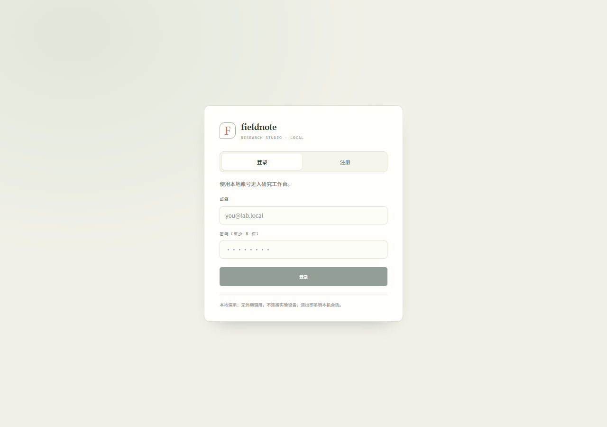
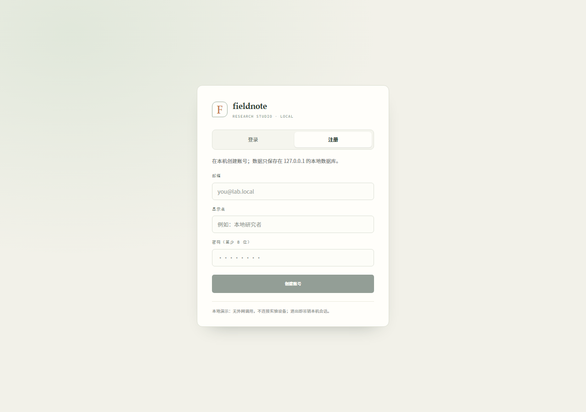
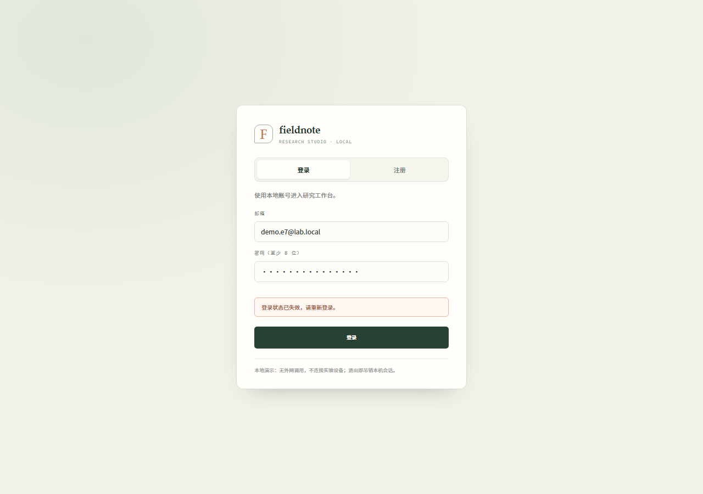
案例工作流以 «AmeR 蛋白质定向进化» 为演示案例，包含八个可导航的研究阶段，进度与事件可本地保存、推进、刷新恢复与重置。
a3s-code-core = 9.1.1，经宿主模型接口注入本地固定响应 fixture，页面显示运行时事件（如 text_delta、agent_end）与模型调用计数。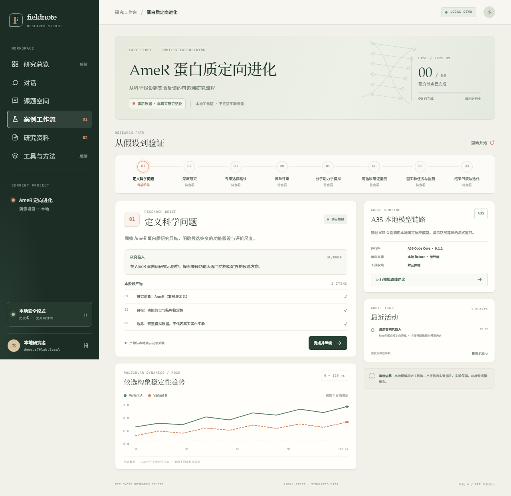
「研究资料 / 论文工具」工作区提供三个可导航页签：文献检索、PDF 精读与引文核验；本阶段为前端模拟流程，不是正式文献产品。
.pdf、非空、MIME 允许值、文件头 %PDF- 且不超过 20 MiB；仅校验元信息与开头 5 字节，不上传、不解析正文、不持久化文件。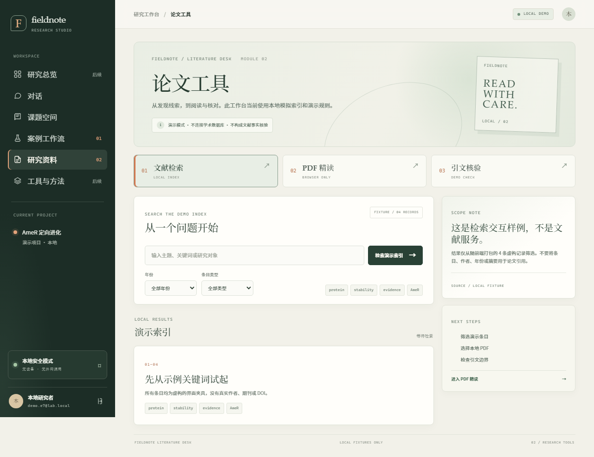
阶段 C 将后端由单文件演示结构收敛为模块化架构，并补齐本地单机可持久化、可迁移、可备份、带最小认证与资源归属的基础设施。
后端按职责拆分为 config / error / logging / util / models / db / auth / storage / state / case / agent 等模块，并以 routes/ 目录承载 auth、subjects、case、agent、admin 等路由。
PRAGMA foreign_keys = ON 与 WAL 日志模式；时间戳统一为 Unix 秒。001_initial 建立 users、sessions、subjects、documents、conversations、messages、runs、evidence、audit_events 等表，并以 PRAGMA user_version 记录已应用版本（幂等、事务内执行）。/api/health、/api/auth/register、/api/auth/login 外，其余接口需 Authorization: Bearer <token>；无令牌 401。POST /api/admin/backup 使用 VACUUM INTO 生成一致性快照，返回相对路径与 SHA-256。ts / level / event / msg / fields）输出到 stderr 并追加到 <data>/logs/app.log；注册、登录成败、课题增删改、文档上传 / 删除、备份均写入审计并落日志。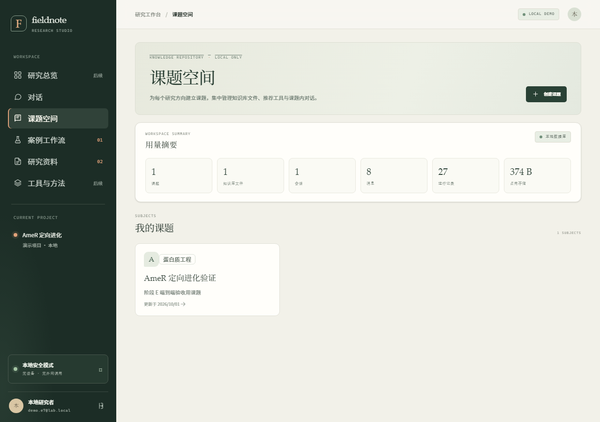
/repo/repository）：「用量摘要」卡片显示课题 1 / 知识库文件 1 / 会话 1 / 消息 8 / 运行记录 23 / 占用存储 374 B，下方为课题卡片列表。（访问路径：/repo/repository ）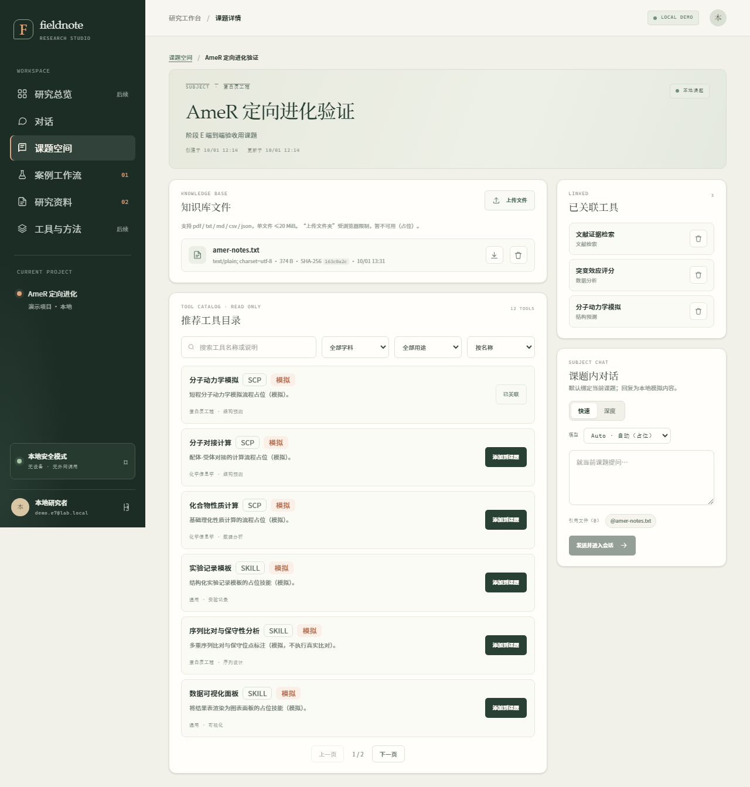
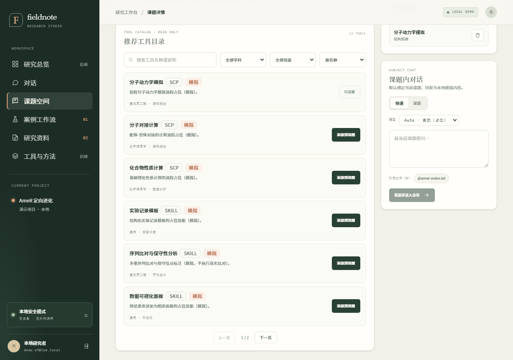
阶段 E 打通「登录 → 建课题 → 上传文件 → 工具关联 → 课题内对话 → 发消息 → 历史与失败态」的核心闭环。
002_conversation_loop，只做追加列与新增表：为 conversations 追加 updated_at、mode（quick / deep）、model（选择器占位值），并新增 subject_tools 关联表。GET/POST /api/conversations、GET/DELETE /api/conversations/{id}；对话必须归属课题，删除级联。POST /api/conversations/{id}/messages 先落库用户消息 → 生成本地模板回复 → 落库助手消息 → 写入 runs（a3s.chat）与 evidence。GET /api/tools 返回只读本地模拟目录，共 12 条（skill 4 类 + scp 8 类），支持 kind/q/field/purpose/sort 过滤。GET/POST/DELETE /api/subjects/{id}/tools[/{tool_id}]，关联幂等。回复复用 A3S 会话：Agent::new(ACL) → 受限 SessionOptions（默认拒绝工具）→ 注入 fixture LLM 客户端。该客户端为提示词感知的本地模板，输出固定免责声明 + 课题 / 模式 / 知识库附件上下文 + 截断回显用户问题 + 建议路径，并以「本轮未使用网络、未执行任何工具；这是一条模拟回复。」收尾。元数据（运行时、版本、fixture 调用次数、事件名）随助手消息返回，前端展示为「A3S 模拟回复」标签与运行时元数据。
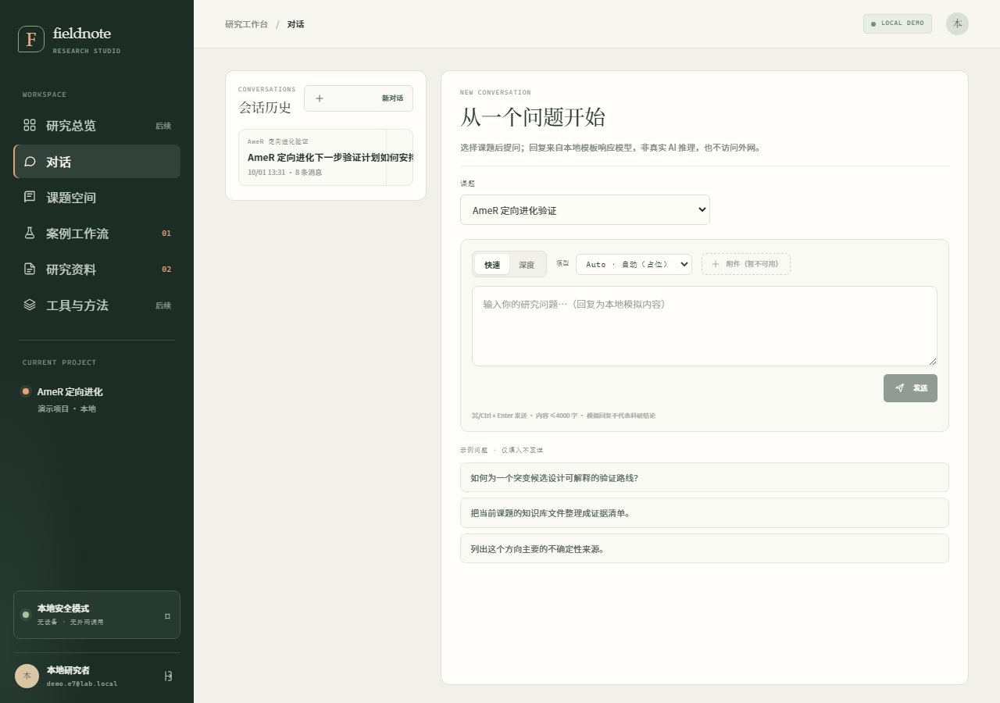
/chat）：左侧会话历史、课题选择器、快速 / 深度切换、模式选择器「Auto · 自动（占位）」、附件菜单「暂不可用」、示例问题（只填入不发送）。（访问路径：/chat ）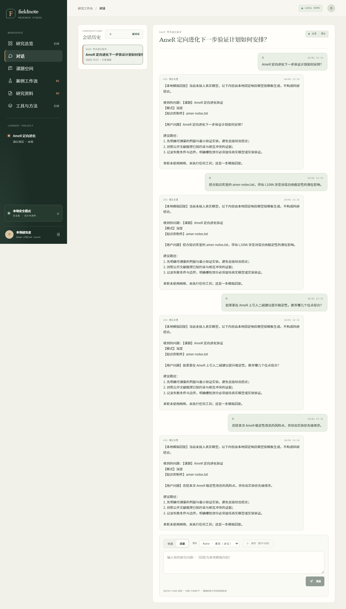
/chat/:id，本次演示会话）：会话历史列表、用户 / 助手消息气泡；助手消息带「A3S 模拟回复」标签、固定免责声明与运行时元数据（时间、入库状态）。（访问路径：/chat/:id ）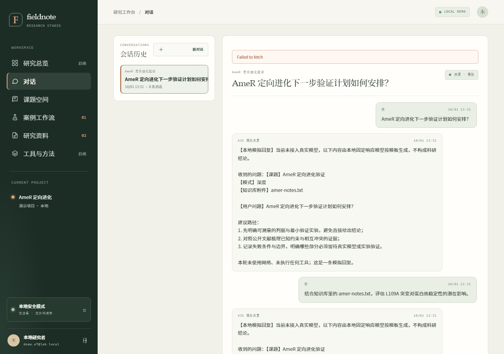
在 390 × 844 的窄屏视口下对三个主要页面进行了适配验收：页面无横向溢出（document.scrollWidth ≤ window.innerWidth），工具行高度正常（修复后 6 行 .tool-row 行高均为 99px）。
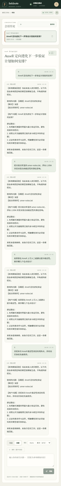
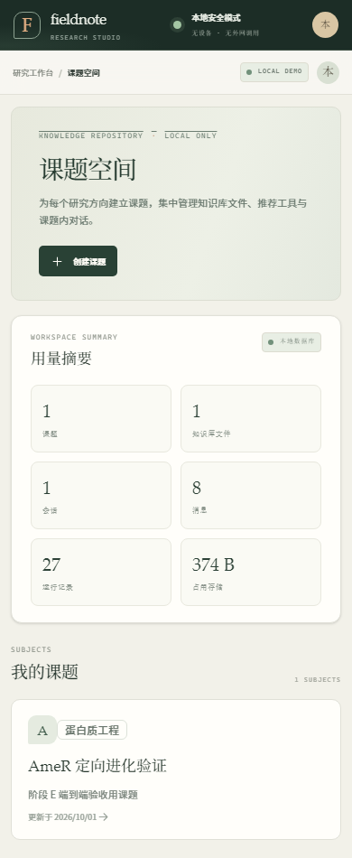
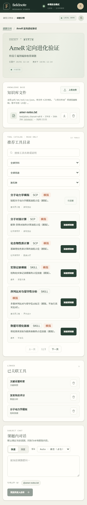
以下数据为 2026/10/1 13:19:08 在 http://127.0.0.1:8081 本地离线采集的真实响应与启动日志（本地 / 离线 / 无外网调用）。
GET /api/health：{ "data": "simulated", "product": "Fieldnote Research Studio", "status": "ok" }。GET /api/tools：total = 12，全部条目 simulated: true（scp 系 8 条 + skill 系 4 条）。GET /api/workspace/summary：{ "subjects": 1, "documents": 1, "conversations": 1, "messages": 8, "runs": 23, "storage_bytes": 374 }。{"event":"migration.applied","fields":{"applied":2,"schema_version":2},...} 与 {"event":"server.started","fields":{"address":"127.0.0.1:8081"},...}，并输出 Fieldnote API listening at http://127.0.0.1:8081。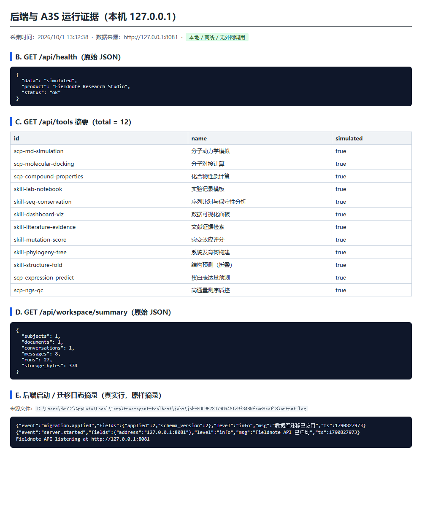
GET /api/health 与 GET /api/workspace/summary 原始 JSON、GET /api/tools 摘要（total = 12，全部 simulated）、以及后端启动 / 迁移日志摘录。（数据来源：http://127.0.0.1:8081 ，离线采集）/api/health 标注 "data": "simulated"。simulated: true。Auto · 自动（占位））：仅记录，不改变回复来源。以下事项均未执行，需用户明确授权后再单独立项。